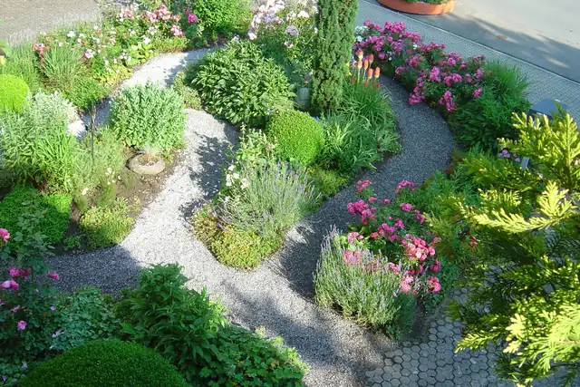
Planen und Bauen
Gartenbau
Wasser, Stein und Pflanzen, für Ihren Garten gebaut.
- Wasser und Teiche
- Bepflanzungen
- Natursteinmauern, Treppen, Wege und Sitzplätze
- Kräuterspirale
- Pergola
- Kunst im Garten
Gartenbau, Gartenpflege und Grabpflege in Emmen
Seit 1980 mit der Natur verbunden: Wir planen, gestalten und pflegen Ihren Garten in der Region Zentralschweiz.
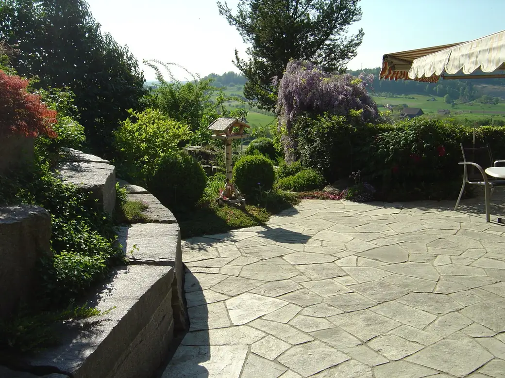
Unsere Leistungen
Wir planen, gestalten und pflegen Ihren Garten, alles aus einer Hand. Dazu kommt die Grabpflege auf vier Friedhöfen in der Region.

Planen und Bauen
Wasser, Stein und Pflanzen, für Ihren Garten gebaut.
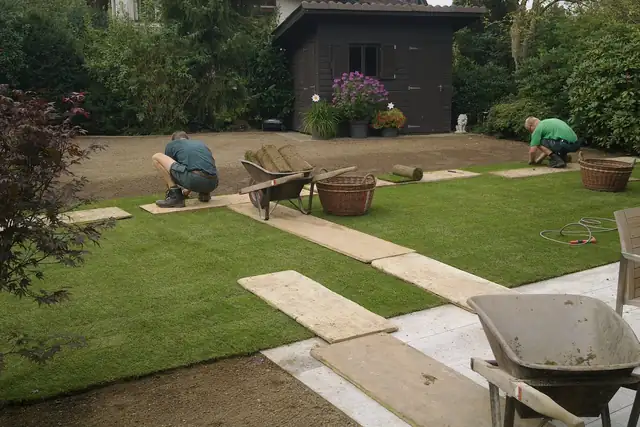
Pflegen
Es braucht das aufmerksame Auge, das die nötigen Arbeiten erkennt.
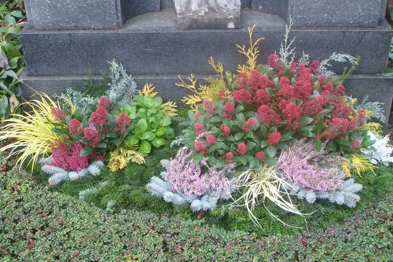
Mit Sorgfalt
Sorgfältige Pflege auf vier Friedhöfen, auf Wunsch für die ganze Zeit der Grabesruhe.
Aus unserer Arbeit
Eine Auswahl unserer Arbeiten, jedes Bild mit einer kurzen Beschreibung. Tippen Sie auf ein Bild, um es gross anzusehen.
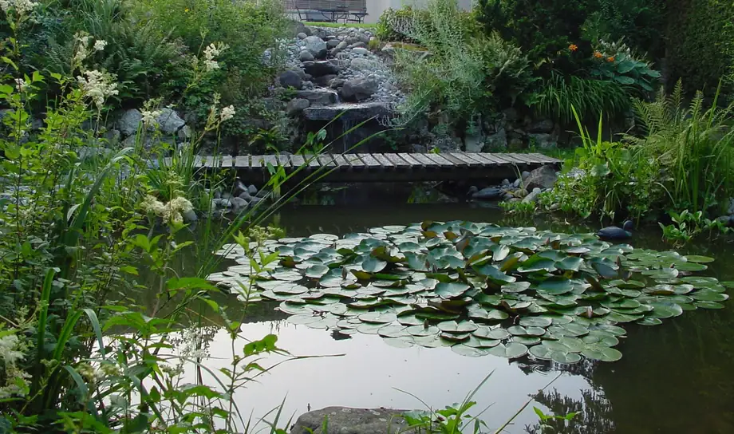
WasserTeich mit Holzsteg und Seerosen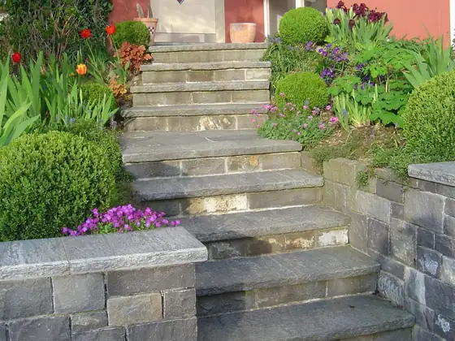
NatursteineNatursteintreppe mit Buchs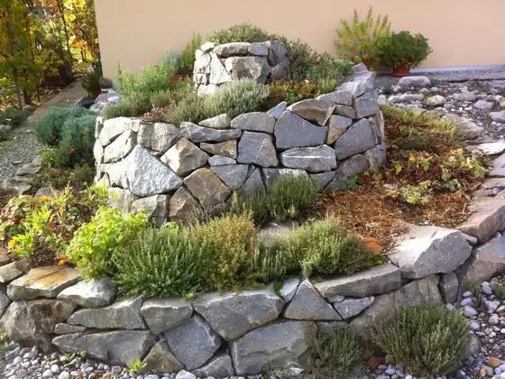
KräuterspiraleKräuterspirale aus Naturstein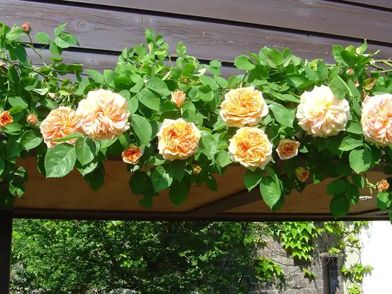
PergolaPergola mit Rosen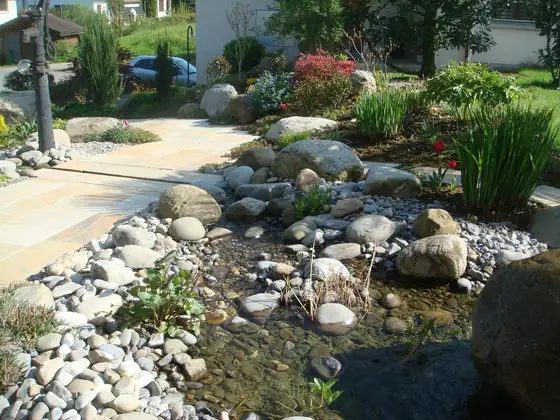
WasserBachlauf mit Natursteinen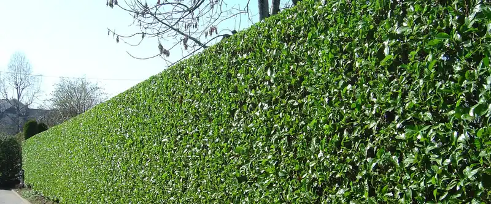
GartenpflegeHeckenschnitt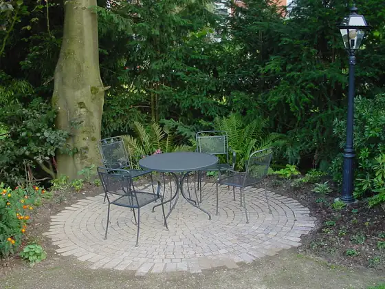
Wege und SitzplätzeRunder Sitzplatz mit Pflaster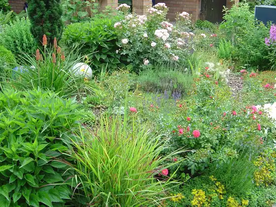
BepflanzungenStaudengarten mit RosenWasser besitzt eine eigene Magie.
Teich mit Natursteinufer
Grabpflege
Wir pflegen Gräber auf vier Friedhöfen in der Region und sind Mitglied der Stiftung Dauergrabpflege Luzern. Auf Wunsch regeln wir die Pflege vertraglich für die ganze Zeit der Grabesruhe.
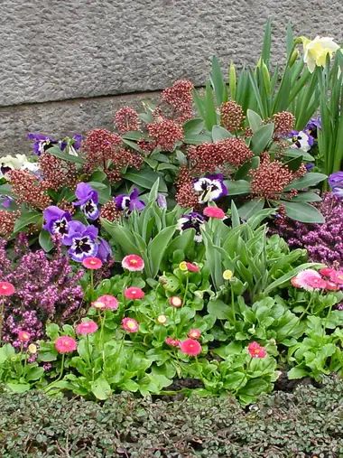
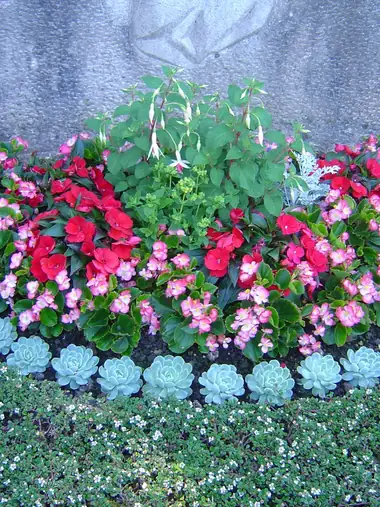
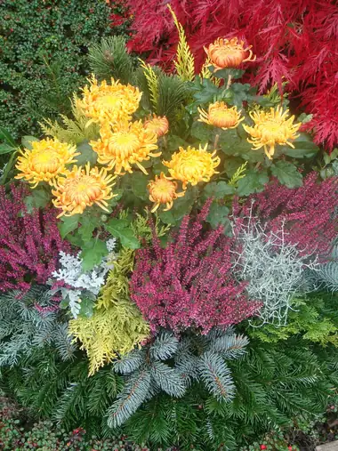
Über uns
1980 hat Ruedi Müller aus Emmen die Einzelfirma «Ruedi Müller Gartengestaltung» gegründet und während 25 Jahren einen treuen Kundenstamm aufgebaut. Heute führt Gärtnermeister Georg Ettlin den Betrieb.
Geschäftsführung, Gärtnermeister
Geschäftsführung, Administration
Landschaftsgärtner, seit 1988 im Betrieb
Gärtner und Metallbauer, seit 2026
Dank langjährigen und erfahrenen Mitarbeitern zählen wir auf ein konstantes Team.
Kontakt
Für Ihr Interesse an unseren Dienstleistungen, für konkrete Fragen oder Anliegen stehen wir Ihnen gerne zur Verfügung.